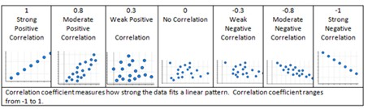
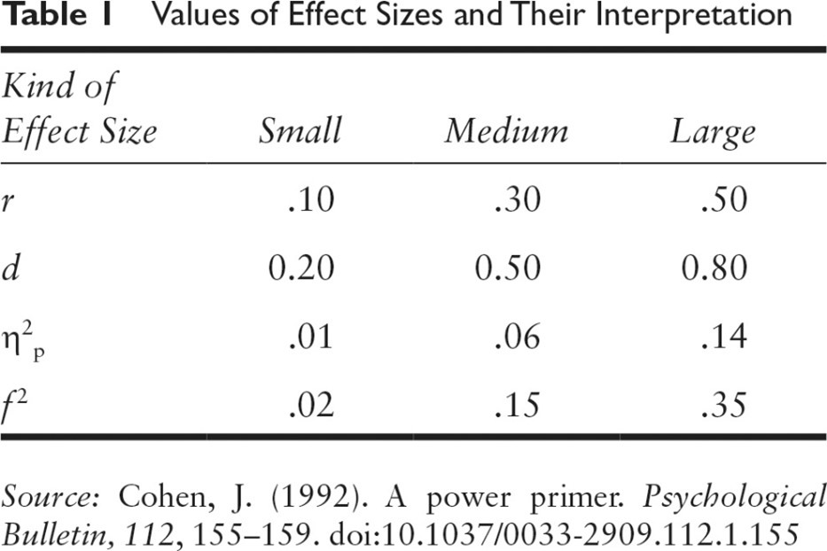
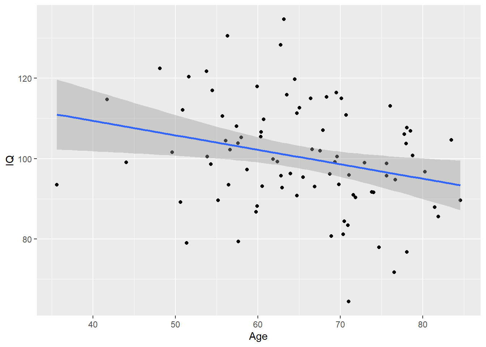
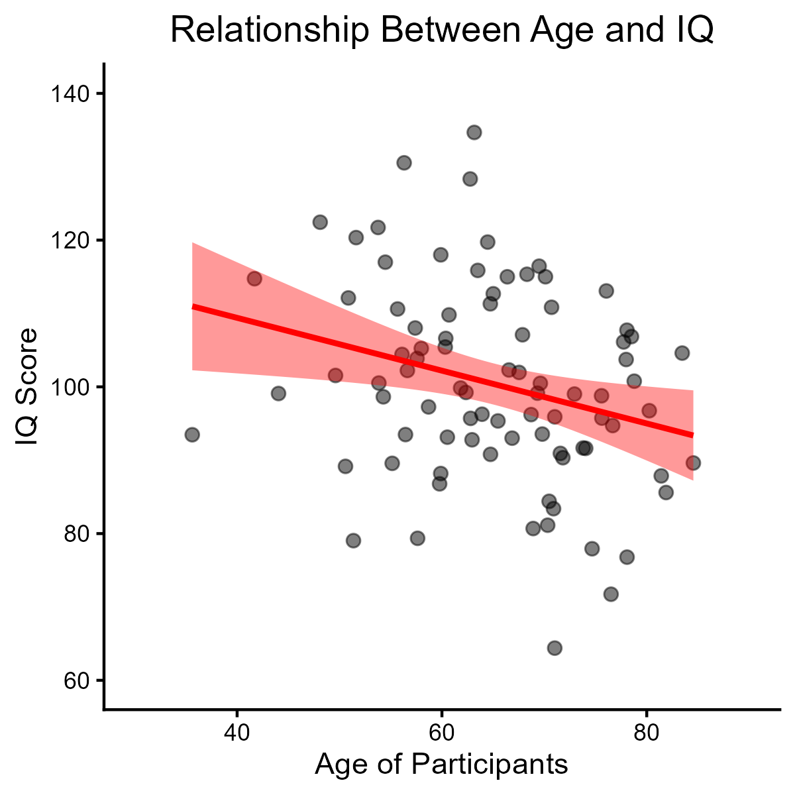

Practical Assignment #4
Exploring Variability in the DV: Assignment Instructions
Please submit a single document for practical #4. A .docx file is the preferred format.
1. Connecting covariates to you dependent variable of interest
By this point, you’ve had a chance to develop your ideas around how to measure a construct within your research topic of interest. The simplest thing to do with such information is just to report its properties, like the average grade in a class, or frequencies, like how many people sign up for different classes. These are known as descriptive statistics.
But if we want to go further and understand why the world is the way that it is, we may try to see how things we can measure are linked together. If we are going to observe more than one variable of interest and see how closely linked these variables are, we are beginning to engage association claims, which often involves a correlational approach. When one variable is correlated with another variable of interest, we call it a covariate.
For your topic of interest, describe a second construct / covariate that you suspect is linked (either positively or negatively) to your dependent variable of interest. What is your reasoning for selecting this variable? Is there an obvious reason that it is relevant, or, even better- is it mentioned as being related in the research literature? In a short paragraph (3-5 sentences), describe:
Discuss your idea for why the two variables might be related.
Be clear if the proposed relationship is positive or negative, and speculate about the strength.
- Provide an in-text citation to (at least) one peer-reviewed article that shows that the constructs might be related.
- If there is no direct evidence or reporting of this relationship, then cite an article that shows that show some sort of peripheral evidence that could support the relationship that you are proposing.
- Below the paragraph, provide an APA style reference to the paper that you cited.
2. What is already known about these varaibles?
Write a paragraph or two describing what we know about your proposed DV and covariate. What direction are the proposed associations? In this section, you should cite at least 2 empirical, peer-reviewed papers that help you to estimate the expected association size, using APA format (minus hanging indents) and including the full references below the paragraph(s).
Most importantly, we need to get specific about the expect association value. In your brief literature review, please report any measure of association, which will often be a correlation (r) or beta estimate (b), along with some interpretation of the effect size involved. Effect sizes can be described by specific effect size statistics like cohen’s d or partial eta squared, or they could be describe by confidence intervals.
If you cannot find any reports of correlation values in the literature, then you will have to argue from theory about your predicted effect size:

Please note that finding correlations >.30 (or < -.30) is rare in a lot of psychology (especially human research; animal studies tend to yield larger effect sizes), so you will need to justify the effect size you expect to find.
3. Power Analysis: what sample size should you use?
Use the pwr package in Rstudio to determine the sample size needed to meet statistical significance at a = 0.05 and beta = 0.8 given the estimated correlation that you derived from your literature search. Explain what values you entered in the calculator, and what number of participants the calculator indicated would be sufficient to detect statistical significance.
For this portion of the assignment, make sure that you have your code blocks set to echo = TRUE, message = FALSE, warning = FALSE. This will print the code and the result, but not excessive the messages that R sends.
Simulate two columns of data using the rnorm_multi() function from the faux package to represent your DV and covariate. Use the sample size that you determined was required for adequate power.
Analyze the linear relationship between the two variables using both the cor.test() function and the lm() function. Write two separate statements that highlight the unique information gained from each analysis approach.
4. A picture is worth 1000 words…
Generate a ggplot (scatterplot) of the data with a linear line of best fit. You can format this graph in any way that you see fit. Feel free to be creative! Every element of this chart can be tweaked to your specifications. Feel free to Google how to change specific aesthetics.
Save the ggplot as a high-quality .png image (dpi = 300).
Call back the image that you saved to showcase your simulated data in picture form, and add a figure caption to describe the relationship that you have depicted in the chart.!
5. Reflect
Write a closing paragraph (3-5 sentences) summarizing what it is like trying to estimate an association / correlation from the literature. What did you think about creating your first data visualization using R? Were you surprised by the number of participants required to detect your effect with 80% power? Feeling confused about any of these concepts? Is there anything that would have improved your experience doing this assignment?
Code for Practical #4
# Set up how the code chunks will print
knitr::opts_chunk$set(echo = TRUE, # Show the code
warning = FALSE, # Hide the warnings
message = FALSE) # Hide the messages
options(scipen=999) # turn off scientific notation# You must install packages before you can use them.
# You only need to install once per computer.
# install.packages(c("faux","tidyverse","pwr"))
library(faux)
library(tidyverse)
library(pwr)Power Analysis
In order to determine an optimal sample size, we estimate the magnitude of the effect of interest, then back-calculate how many participants would be needed to detect significance, assuming that the hypothesized effect actually exists in the real world. There is a hand R-function to accomplish this: pwr.r.test() from the pwr package. Here, we specify four pieces of information, and ask R to calculate the fifth. Whichever element is set to NULL will be calculated by R:
pwr.r.test(
n = NULL,
r = -0.3,
sig.level = 0.05,
power = 0.8,
alternative = "two.sided"
)
approximate correlation power calculation (arctangh transformation)
n = 84.07364
r = 0.3
sig.level = 0.05
power = 0.8
alternative = two.sidedMy analysis indicates that a sample size of \(n = 85\) would be required to detect statistical significance at \(\alpha = 0.05\) for a relationship where \(r = 0.3\).
Make sure to always round up the number of participants!
Generate Data
For practical #4, we will generate data using a different approach than what we did previously in practical #3. Here, we will use the rnorm_multi() function from the faux package. This function allows us to generate two columns of data with a specified correlation between them.
# Set a consistent start point for "random" data generation
# Makes it so the output will be consistent
set.seed(123) # Can be any value.
# Generate data. Specify the number of rows, number of variables, means for the columns, sd's for the columns, and the correlation between the columns.
data <- rnorm_multi(
n = 85, vars = 2,
mu = c(65,100),
sd = c(10,15),
r = -0.3)The code above assigns a dataframe with two columns onto the object
data.The first column will have a mean of 65 and a standard deviation of 10. This column represents the age of the participants in my fictitious study.
The second column will have a mean of 100 and a standard deviation of 15. This column represents IQ scores in my fictitious study.
Check out the data
Just like we did in practical #3, we can pass our data object to the head() function to see a preview of the first 6 rows:
# Show me the first 6 rows of data:
head(data) X1 X2
1 64.74322 90.80306
2 56.44198 93.49663
3 53.76554 121.72313
4 67.53304 101.96359
5 54.27693 98.64371
6 48.10980 122.44146- By default, the
rnorm_multi()function names the columns X1 and X2 (not the most informative!)
I recommend that you rename the columns to reflect the quantities that they are intended to represent. You can use this code to rename them:
# Rename the columns to represent your variables
colnames(data) <- c("Age","IQ")Check the correlation
We specified a correlation when generating this data using rnorm_multi(), but the data are generated using a pseudo-random process, so the correlation between the columns won’t always be exactly what we specified.
cor.test(data$Age,data$IQ)
Pearson's product-moment correlation
data: data$Age and data$IQ
t = -2.5503, df = 83, p-value = 0.0126
alternative hypothesis: true correlation is not equal to 0
95 percent confidence interval:
-0.45646873 -0.05988606
sample estimates:
cor
-0.2695696 The actual correlation between my two columns of data is -.27.
Notice how this output provides information on everything that we need for APA-style statistical reporting (correlation coefficient, t statistic, degrees of freedom, p-value, 95% confidence intervals).
If you don’t like the result of this analysis, you can feel free to play around with the value in set.seed until you are happy.
Compute a simple linear regression
Correlation is a simplified version of regression, so if we compute a regression on the same data, many of the values will be exactly the same. One key piece of information that the linear model provides which the correlation output does not give us is the slope of the line of best fit.
# Construct a simple linear model
res <- lm(IQ ~ Age, data=data)
# See a summary of the linear model
summary(res)
Call:
lm(formula = IQ ~ Age, data = data)
Residuals:
Min 1Q Median 3Q Max
-33.851 -7.613 -0.847 10.302 33.607
Coefficients:
Estimate Std. Error t value Pr(>|t|)
(Intercept) 123.8054 9.2884 13.33 <0.0000000000000002 ***
Age -0.3600 0.1412 -2.55 0.0126 *
---
Signif. codes: 0 '***' 0.001 '**' 0.01 '*' 0.05 '.' 0.1 ' ' 1
Residual standard error: 13.01 on 83 degrees of freedom
Multiple R-squared: 0.07267, Adjusted R-squared: 0.0615
F-statistic: 6.504 on 1 and 83 DF, p-value: 0.0126The Estimate for my predictor (Age) is the slope of the line of best fit.
Here, each 1-year increase in age is associated with a 0.36-point decrease in IQ scores.
Depending on your goals, you could also say something like a 10-year increase in age is associated with a 3.6-point decrease in IQ score.
Code to generate a basic scatterplot:
As we’ve discussed in class, a picture is worth 1000 words when it comes to data! Seeing a chart of the continuous relationship will always be more informative than reviewing the statistical outputs.
data %>%
ggplot(aes(x = Age, y = IQ))+
geom_point()+
geom_smooth(method = "lm")
Running the code to create the ggplot will print it out in-line.
By default it will be 7 inches by 7 inches, generating small axis titles and a “zoomed-out” appearance when rendered.
A fancier, better looking scatterplot:
To improve the chart aesthetics, we can save it off as a .png image, then call the .png image back to our file. This will print out a more balanced, better looking chart. To accomplish this, I add additional arguments into the geom_point() and geom_smooth() lines of the chart code. Then, I use ggsave() to generate a .png image which will be stored in my working directory. The image will be 4 inches wide and 4 inches tall, and have 300 display pixels per inch. Finally, I use knitr::include_graphic() to print a copy of the .png image.
a <- data %>%
ggplot(aes(x = Age, y = IQ))+
geom_point(size = 2, alpha = 0.5, colour = "black")+
geom_smooth(method = "lm", colour="red", fill="red", alpha = 0.4)+
theme_classic()+
theme(plot.title = element_text(hjust=0.5))+
labs(
x = "Age of Participants",
y = "IQ Score",
title = "Relationship Between Age and IQ"
)+
xlim(30,90)+
ylim(60,140)
# Save the chart once you're happy with it as a high quality .png image
ggsave("JLB_graph.png",a,height=4,width=4,dpi = 300)
# Add in the high quality image saved above
knitr::include_graphics("JLB_graph.png")
Now the axes are more appropriately sized and easier to read.
I also added
theme_classic()which makes the chart appear more academic than the default ggplot output.